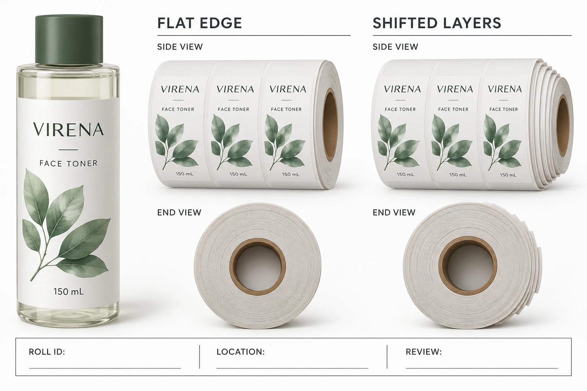

Describe the geometry before naming its cause
Record which side appears displaced and whether the feature is visible around the roll or mainly in one area. Take an identifiable side view and an end view, with the roll reference visible separately. Do not use a close-up so tight that the reviewer cannot tell which supplied unit it belongs to.
Keep telescoping distinct from a crushed core, loose outer wrap, bent carton or damaged label edge. Several concerns can coexist, but each should have its own observation. The word damaged is too broad to decide which specialist should review the material.
This article does not diagnose winding tension, transit handling or storage as the cause. Those are questions for the converter's investigation using its production and shipping records. A stepped profile is an observation; a cause needs additional evidence.
Preserve the receiving state
Identify the purchase order, artwork, carton and roll using the references actually supplied. Record when the carton was opened and what packaging arrangement was present. Retain the packaging and relevant material under the supplier's and site's instructions.
Do not push the roll edge, loosen the winding or rewind it simply to improve the photograph. If a technical party requests a controlled examination, record who authorized it and preserve the before-and-after references. Corrective handling and inspection are different events.
The quality-issue evidence guide covers the wider order and sample record. Here the extra evidence is the supplied roll shape and whether that shape changed during receiving or review.
Separate an affected unit from an order-wide conclusion
If only one roll has been observed, describe the rest as unreviewed unless an agreed examination establishes more. If several rolls show the concern, identify them individually and record whether they came from the same carton or different locations.
Keep a count of identified affected units, inspected units without the observation and unreviewed units. These categories should not be merged into a guessed total defect percentage. The sample record can support an investigation without claiming to be a statistical acceptance plan.
Ask the receiving production team whether the identified stock should remain held while the review proceeds. This guide does not authorize use, disposal or rework. The decision depends on the actual geometry, construction, equipment and the relevant parties' instructions.
Use a roll-shape receiving record
The following worksheet is intended to preserve evidence and responsibility, not define a permissible axial displacement.
| Record | What to supply | What it avoids |
|---|---|---|
| Identity | Job, artwork, carton and roll references | Mixing different physical supplies |
| As-received view | Side, end and packaging context | Losing the geometry in a close-up |
| Observation | Where and how layers appear shifted | Treating every roll concern as the same defect |
| History | Known opening, movement and authorized review events | Inventing the missing handling history |
| Extent | Identified observed, checked and unreviewed units | Unsupported order-wide rejection claims |
| Technical review | Converter and receiving-operation response | Improvised rewinding or equipment use |
| Disposition | Named authorization and preserved evidence | Confusing acknowledgement with acceptance |
Complete identity and photographs before changing the roll. Send the observation and available history to the supplier, ask what further physical review is needed and obtain the receiving site's instruction for the affected unit. Record the next action and the person responsible.
If the supplier proposes rewinding or another correction, ask how the corrected roll will be identified and what receiving checks remain necessary. An improved-looking outer edge is not, by itself, proof that every label and the backing remain suitable.

Two reasonable outcomes need different records
A hypothetical single sample roll may require an agreed replacement or further review while separately identified unaffected stock remains available under the site's release process. That decision should be supported and recorded rather than assumed from this article.
A broader concern across several cartons may require a wider supplier investigation before the next filling run. The useful difference is the actual scope of evidence, not how alarming the first photograph looks. Avoid assigning responsibility for transit or production until the relevant records have been reviewed.
After the immediate question is resolved, retain any revised packing or handling instruction with the job. The storage guide provides the separate framework for identified stock waiting for use. Do not rewrite an uncertain past history to match the new instruction.
For a cosmetic label order question, prepare the job, roll references, matched views and known extent. Use the contact form to draft a message, then send photos through email or WhatsApp. Preserve the roll's evidence until the parties agree what should happen next.